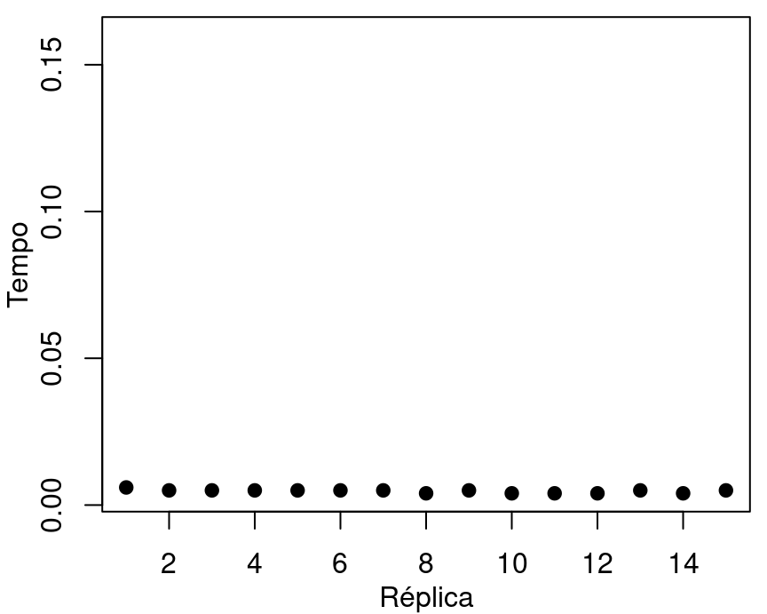
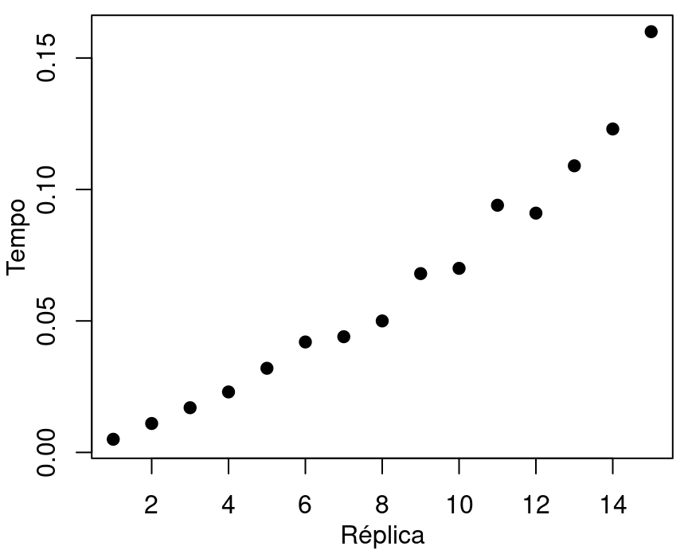

Introdução e Estatística Descritiva
Bibliografia
üìö DEVORE, Jay L. Probabilidade e estat√≠stica: para engenharia e ci√™ncias. São Paulo: Cengage Learning, 2012;
üìö MORETTIN, Pedro Alberto; BUSSAB, Wilton de Oliveira. Estat√≠stica básica. 8¬™ ed. São Paulo: Saraiva, 2013.
Importante: datas serão definidas em conjunto com a turma.
Contatos e sala:
O que é Estatística? Campo da ciência que se dedica a coleta e análise de dados.
Importância: A Estatística é particularmente interessante nas seguintes situações:
Uma tarefa é executada várias vezes em um mesmo computador e os tempos de execução são registrados. Nesse caso, a Estatística pode ajudar a:
Veja abaixo 15 réplicas do tempo necessário para ordenar \(n\) observações, com: (esquerda) \(n=100000\) fixo; (direita) \(n=100000r\) para a réplica \(r\).


A Fig 1 (a) nos mostra que:
Já a Fig 1 (b) sugere que:
Figura 2: Ilustração do processo estatístico
População: é o conjunto de todos indivíduos (Unidades Experimentais - UE) que se tem interesse de investigar.
Censo: processo de observação de toda a população;
Fatores que podem impedir a realização de um censo:
Devido aos obstáculos de se realizar um censo, uma alternativa consiste de observar uma parcela da população.
Amostra: qualquer parcela de indivíduos da população.
Importante! Para podermos extrapolar os resultados da amostra para a população, necessitamos que a amostra seja representativa, isto é, que represente bem a população.
Amostragem: campo de estudo de técnicas de coleta de amostras representativas.
Amostragem probabilística: qualquer técnica de seleção amostral que garanta que as probabilidades de inclusão de cada elemento são maiores que zero e conhecidas.
Conceitualmente, a Amostragem Aleatória Simples (AAS) é o plano de amostragem probabilística mais básico.
A AAS consiste da seleção aleatória de \(n\) (tamanho amostral) elementos uma lista de todos elementos da população (marco amostral).
Dificuldade: em muitos casos, a obtenção do marco amostral é inviável.
Em geral, não há interesse nos indivíduos em si, mas em características, numéricas ou não dos mesmos.
Variável: característica numérica ou não compartilhada por todos indivíduos da população.
As variáveis são classificadas pelos valores que podem apresentar.
Exemplo: “Profissão” e “Renda” apresentam valores de essência completamente diferentes.
A classificação de variáveis é muito importante, pois auxilia na escolha dos métodos de Estatística Descritiva apropriados.
Por exemplo, não faz sentido falar em soma e produto de variáveis não numéricas. Assim, medidas como a média não podem ser calculadas para esse tipo de variáveis.
Vejamos as definições dos diferentes tipos de variáveis.
Apresentam valores não numéricos (também chamadas de categorias). Se dividem em:
Apresentam valores numéricos. Se dividem em:
Exemplo: Uma comparação de algoritmos para ordenação de um conjunto de dados produziu o seguinte banco de dados:
| Algoritmo | Tamanho Amostral | Núcleos | Tempo |
|---|---|---|---|
| A | Pequeno \((n = 10^2)\) | 4 | \(<\text{0,01}\) |
| B | Pequeno \((n = 10^2)\) | 4 | \(\text{0,01}\) |
| A | Interm. \((n = 10^3)\) | 4 | \(<\text{0,01}\) |
| B | Interm. \((n = 10^3)\) | 4 | \(\text{0,79}\) |
| A | Grande \((n = 10^4)\) | 4 | \(<\text{0,01}\) |
| B | Grande \((n = 10^4)\) | 4 | \(\text{51,00}\) |
| A | Pequeno \((n = 10^2)\) | 8 | \(<\text{0,01}\) |
| B | Pequeno \((n = 10^2)\) | 8 | \(<\text{0,01}\) |
Tipos das variáveis: Algoritmo (nominal); Tamanho amostral (ordinal ou discreta); Núcleos (discreta); e Tempo (contínua).
Muitas vezes, a quantidade de dados faz com que seja difícil enxergar comportamentos/padrões dos mesmos.
Uma ferramenta muito útil é a distribuição de frequências.
A distribuição de frequências:
Seja \(x_1\ldots, x_n\) uma amostra de tamanho \(n\) de uma variável \(X\). Sejam \(x_1^*, \ldots, x_k^*\) os \(k\) valores distintos da amostra, onde, normalmente \(k\leq n\).
Frequência (absoluta): é o número de repetições \(n_i\) apresentado pelo valor \(x_i^*\) na amostra, com \(i = 1, \ldots, k\).
A distribuição de frequências absoluta de \(X\) é definida pela tabela ao lado.
Quando possível, os valores distintos devem ser apresentados em ordem crescente, isto é, \(x_1^* \leq \ldots \leq x_k^*\).
| Variável | Frequência |
|---|---|
| \(x_1^*\) | \(n_1\) |
| \(\vdots\) | \(\vdots\) |
| \(x_k^*\) | \(n_k\) |
| Total | \(\sum_in_i\) |
| Dia Útil | Frequência |
|---|---|
| Não | 20 |
| Sim | 50 |
| Atendimentos | 0 | 1 | 2 | 3 | 4 | 5 | 6 | 7 | 8 | 9 | 10 |
|---|---|---|---|---|---|---|---|---|---|---|---|
| Frequência | 10 | 6 | 11 | 6 | 4 | 14 | 6 | 5 | 5 | 2 | 1 |
| Dia Útil | Atendimentos | ||||||||||
|---|---|---|---|---|---|---|---|---|---|---|---|
| 0 | 1 | 2 | 3 | 4 | 5 | 6 | 7 | 8 | 9 | 10 | |
| Não | 9 | 6 | 4 | 1 | 0 | 0 | 0 | 0 | 0 | 0 | 0 |
| Sim | 1 | 0 | 7 | 5 | 4 | 14 | 6 | 5 | 5 | 2 | 1 |
Na última tabela, vimos que o número de ocorrências nos subgrupos Dia Útil = Não e Dia Útil = Sim são diferentes.
Importante: Se a diferença for muito grande, a comparação nos subgrupos fica comprometida.
Nesse caso, devemos usar as frequências relativas: \[ f_i = \frac{n_i}{n}, \] em que \(n_i\) é a frequência (absoluta) do \(i\)-ésimo valor e \(n\) é o tamanho da amostra.
Observação: As frequências relativas podem ser apresentadas em percentual.
| Dia Útil | Atendimentos | ||||||||||
|---|---|---|---|---|---|---|---|---|---|---|---|
| 0 | 1 | 2 | 3 | 4 | 5 | 6 | 7 | 8 | 9 | 10 | |
| Não | 9 | 6 | 4 | 1 | 0 | 0 | 0 | 0 | 0 | 0 | 0 |
| Sim | 1 | 0 | 7 | 5 | 4 | 14 | 6 | 5 | 5 | 2 | 1 |
| Dia Útil | Atendimentos | ||||||||||
|---|---|---|---|---|---|---|---|---|---|---|---|
| 0 | 1 | 2 | 3 | 4 | 5 | 6 | 7 | 8 | 9 | 10 | |
| Não | 45 | 30 | 20 | 5 | 0 | 0 | 0 | 0 | 0 | 0 | 0 |
| Sim | 2 | 0 | 14 | 10 | 8 | 28 | 12 | 10 | 10 | 4 | 2 |
Algumas observações importantes:
Nos casos em que temos pouca (ou nenhuma) repetição de valores, a distribuição de frequências não traz informação relevante.
Normalmente, esse fenômeno ocorre em variáveis quantitativas contínuas, mas também pode ocorrer nas discretas.
Alternativa: Considerar a frequência de faixas de valores, em vez dos valores propriamente ditos.
O que são? As faixas são subintervalos, cuja união compreende todos valores observados da variável em questão e cuja as interseções 2 a 2 são vazias.
Observações:
Construção: Dada uma amostra \(x_1, \ldots, x_n\) de tamanho \(n\), para a construção de \(k\) faixas \(I_1, \ldots, I_k\), devemos:
Construção: Dada uma amostra \(x_1, \ldots, x_n\) de tamanho \(n\), para a construção de \(k\) faixas \(I_1, \ldots, I_k\), devemos:
Construção: Dada uma amostra \(x_1, \ldots, x_n\) de tamanho \(n\), para a construção de \(k\) faixas \(I_1, \ldots, I_k\), devemos:
Construção: Dada uma amostra \(x_1, \ldots, x_n\) de tamanho \(n\), para a construção de \(k\) faixas \(I_1, \ldots, I_k\), devemos:
Construção: Dada uma amostra \(x_1, \ldots, x_n\) de tamanho \(n\), para a construção de \(k\) faixas \(I_1, \ldots, I_k\), devemos:
Construção: Dada uma amostra \(x_1, \ldots, x_n\) de tamanho \(n\), para a construção de \(k\) faixas \(I_1, \ldots, I_k\), devemos:
Observações:
Bibliografia
üìö Sturges, H. A. (1926). The choice of a class interval. Journal of the american statistical association, 21(153), 65-66.
Há casos que o fenômeno impõe a necessidade de escolha de faixas desiguais.
Problema: Nesses casos, a amplitude da faixa tem influencia na sua frequência. Por exemplo, faixas muito grandes podem apresentar frequência muito alta, não pela região ter pontos muito frequentes, mas pelo fato de a região ser maior
Alternativa: Utilizar a densidade de frequência relativa. A densidade da \(j\)-ésima faixa é definida por \[d_i = \frac{f_i}{h_i},\]em que \(h_i = a_i-a_{i-1}\) é a amplitude da referida faixa.
Observação: A densidade pode ser interpretada como a quantidade de frequência relativa por unidade da variável na respectiva faixa.